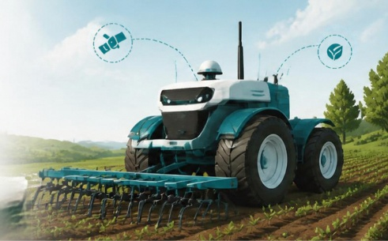
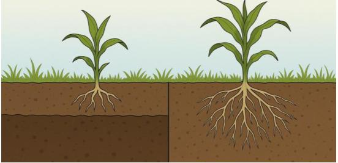
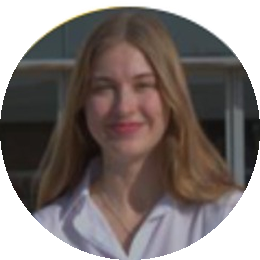
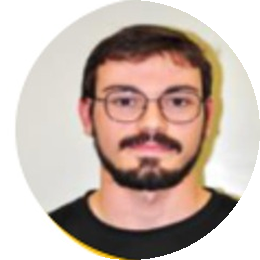

SEMANAS 1–4
Envolvimento
Compreensão do problema, identificação das necessidades do setor agrícola e contacto com a comunidade e potenciais parceiros.
Uma proposta de maquinaria agrícola mais leve, inteligente e sustentável, através da integração de autonomia, monitorização e materiais de reduzida densidade.

O projeto propõe o desenvolvimento de um trator autónomo com manutenção preditiva, recorrendo à integração de tecnologias de navegação inteligente, monitorização do estado dos componentes e utilização de materiais de reduzida densidade. Pretende-se aumentar a eficiência das operações agrícolas, antecipar possíveis falhas e reduzir o impacto da máquina na compactação do solo, sem comprometer a segurança e a fiabilidade do equipamento.
Reduzir a necessidade de intervenção humana na execução e monitorização de tarefas agrícolas.
Utilizar dados operacionais e de vibração para identificar sinais de degradação antes de avarias.
Explorar materiais de menor densidade para reduzir a massa da máquina e os efeitos da compactação do solo.
Fusão sensorial com LiDAR, GPS RTK e visão artificial para orientação em ambientes agrícolas variáveis.
Sensores, telemetria e Edge AI para acompanhar a integridade dos componentes e estimar a sua vida útil remanescente.
Estudo de materiais e do chassi, com análise de resistência, vibrações, massa e interação com o solo.
O peso elevado da maquinaria agrícola pode aumentar a compactação do solo, afetando o desenvolvimento das raízes e a produtividade.
Base científica: Hamza & Anderson (2005).

A proposta articula a perceção do ambiente, a decisão autónoma, o funcionamento mecânico e a monitorização do estado da máquina.
LiDAR, GPS RTK, câmaras e sensores de vibração
Fusão sensorial, algoritmos de navegação e Edge AI
Orientação, controlo de movimento e alertas de manutenção
O trabalho está organizado em três fases complementares, distribuídas por 14 semanas.
Compreensão do problema, identificação das necessidades do setor agrícola e contacto com a comunidade e potenciais parceiros.
Revisão do estado da arte, estudo de materiais, sensores, navegação, vibrações e soluções de manutenção preditiva.
Consolidação do conceito, definição de requisitos, comparação de alternativas e planeamento da validação técnica e ambiental.
A proposta prevê a colaboração entre diferentes áreas para garantir uma solução tecnicamente fundamentada.
Seleção e caracterização de materiais para aligeiramento estrutural.
Estudo dos impactos da máquina nas culturas e na pedologia do solo.
Integração sensorial, navegação autónoma e diagnóstico preditivo.
Os contributos seguintes constituem objetivos de desenvolvimento, a validar em etapas posteriores.
Avaliar o potencial da navegação autónoma para otimizar operações e reduzir paragens não planeadas.
Estudar a capacidade dos dados de vibração e dos modelos preditivos para antecipar necessidades de manutenção.
Comparar soluções de aligeiramento estrutural e investigar a relação entre massa, compactação e produtividade.
Estrutura: comparar materiais, resistência mecânica, rigidez e comportamento vibratório.
Autonomia: avaliar navegação e segurança em condições agrícolas variáveis.
Manutenção: recolher dados reais e testar métodos de deteção de anomalias.
Solo: estudar o impacto da massa do equipamento na compactação.
Grupo 1 · Seminários em Engenharia Mecânica · Universidade de Aveiro · 2026/2027
N.º 113611
N.º 114038
N.º 113369

N.º 112652

N.º 107675
N.º 112834
A integração conceptual de navegação autónoma, manutenção preditiva e aligeiramento estrutural, em vez de abordar cada domínio isoladamente.
A redução de massa pode contribuir para limitar a compactação do solo, desde que sejam preservadas a resistência, a rigidez e a durabilidade necessárias.
Por meio da monitorização de sinais operacionais, nomeadamente vibrações, e da avaliação de modelos de diagnóstico e previsão. A eficácia terá de ser demonstrada com dados reais.
Não. Esta webpage apresenta o conceito de investigação e desenvolvimento descrito no poster e os passos previstos para a sua futura validação.
• Xiao et al. (2026) — navegação autónoma e fusão sensorial.
• Zhang et al. (2025) — manutenção preditiva e diagnóstico.
• Hamza & Anderson (2005) — compactação do solo e produtividade.
Referências apresentadas no poster do grupo; completar os dados bibliográficos antes da publicação final.
• Ensaiar materiais de menor densidade.
• Treinar modelos preditivos com dados reais de campo.
• Avaliar a resposta estrutural e a fiabilidade.
• Validar o impacto ambiental e agronómico.